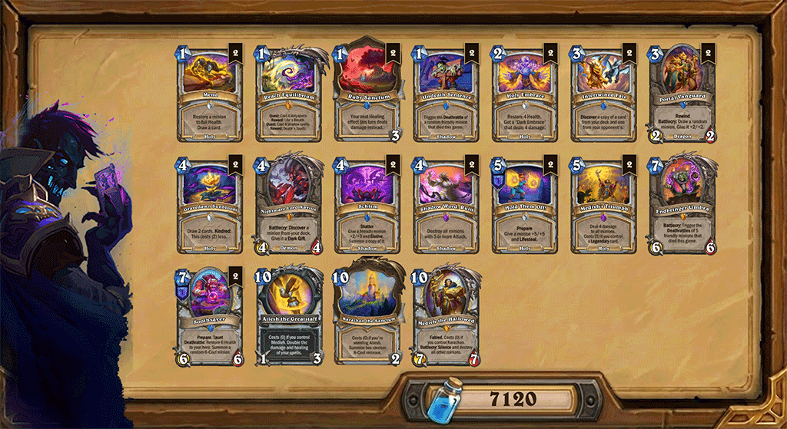

Soothsayer Priest
Greetings, fellow humans! Is the meta choking on Rogues, Hunters, and Shamans? It's time to pull a real secret trump card out of your sleeve. I present to you my original guide to the anti-meta Soothsayer Priest — a decent meta-breaker that carried me to Legend at the start of the month with a 19-5 record.
This build is a veritable Swiss Army knife: it can smash face with a tempo Soothsayer as early as turn 4, dry up the board against aggro, and deliver an unreal 32-damage OTK one-shot straight to the dome of greedy control decks (if you're lucky enough to encounter them, of course).
Decklist
The deck is assembled with surgical precision: it runs a bare minimum of minions so our targeted draw is guaranteed to fetch our key cards. Copy the code below and paste it straight into the game!

Mulligan
A proper starting hand is the foundation of victory. Below are the cards that will ensure an ideal start depending on the matchup.
Always Keep
These cards are equally good in any matchup, albeit with minor caveats.
Reach Equilibrium completes passively over the course of the game and helps discount Medivh's Triumph down to 1 mana. Only toss the Quest in absolutely hopeless opening hands against ultra-aggression.
Soothsayer is the main star of the show. Hard mulligan for her and always keep.
Always keep Portal Vanguard if you don't have Soothsayer in hand. It helps you dig for her faster while establishing at least some board presence.
Vs Aggro
In aggressive matchups, it's crucial to find early removal to stall the initial onslaught.
Definitely look for Medivh's Triumph (we usually toss the second copy). If you manage to find the board clear, 100% keep Reach Equilibrium to discount it.
Vs Control
Against slow decks, you can afford a greedier mulligan.
Intertwined Fate can help you find Soothsayer to start applying pressure, or copy something valuable.
Gravedawn Sunbloom lets you cycle through the deck faster. It's especially useful to keep if you already have a Holy spell in hand.
The devious Nightmare Lord Xavius not only provides targeted draw for Soothsayer, but also gives useful Dark Gifts — discounting a card or summoning a copy can be very useful.
Vs OTK
If you're lucky enough to run into this unicorn, remember: time is working against you.
Use all your targeted draw to find Soothsayer as fast as possible and rush the opponent down before they can assemble their solitaire.
Game Plan
The deck isn't tied to a single scenario — you always have a backup plan.
Tempo Rush
Soothsayer is the main engine of the deck. It's a 6/6 body with Taunt that heals your hero and leaves behind a 6-mana minion. By prepping it in advance, you can play the card as early as turn 4, or sometimes even turn 3 if you play Prepare on turn 2 with the Coin.
The Schism spell lets you split Soothsayer, summoning a full copy with all buffs, creating an impenetrable wall and a massive healing resource. And Undeath Sentence triggers the dead cow's Deathrattle for just 1 mana, even if she was Silenced (but not if she was Transformed!).
Thanks to the Deathrattles, you create a very sticky board, which synergizes perfectly with the Hold Them Off! spell, allowing you not only to pressure the opponent but also to restore health on a truly industrial scale.
Explosive OTK
Against slow control decks, Atiesh the Greatstaff becomes your primary weapon, doubling healing and spell damage. A combo of two Holy Embraces, two Ruby Sanctum locations, and two generated Dark Embraces can dish out 32 direct face damage in a single turn with the Staff equipped. Boom!
Quest Completion
The Reach Equilibrium Quest serves as an alternate win condition. Two meaty 8/8 Sol'etos, Cycle's Rebirths with Taunt and Reborn stabilize the game, provide defense, and deal serious damage, while Endbringer Umbra can duplicate their Deathrattles for lethal burst.
Control vs Aggro
And, of course, what's playing Priest without a little control, right? :)
Medivh's Triumph, combined with a wall of Soothsayers, quickly nullifies the resources of aggressive decks, helping you keep your face intact and your seat temperature at acceptable levels.
Early Game (Turns 1-3)
The deck has virtually no early drops, so the initial phase is dedicated to preparation with a capital P.
Spend your floating mana discounting Soothsayer and Hold Them Off!, complete the first steps of your Quest, and cycle your deck.
Don't rush your board clears, but don't get too greedy if you spot dangerous minions like Warden Maiev. Aside from the obvious Medivh's Triumph, you can combine Ruby Sanctum with Mend, Holy Embrace, and even your Hero Power to remove a high-threat target if necessary.
Keep in mind that Prepare reduces a card's cost by one additional mana. Plan your discounts to efficiently combo Soothsayer, Hold Them Off!, and/or Schism, but don't make it your number one priority.
Midgame (Turns 4-6)
Time to seize the initiative. Drop Soothsayer (ideally on turn 4) and try to split her using Schism, even if the card is still in its fractured form.
Once you've seized the board with minions, cement your lead with the Hold Them Off! spell. Opponents often won't have a fast answer to these stats, and against aggro, we negate our health loss and stabilize.
Play Mend to heal your minions or control the board, Undeath Sentence after a Soothsayer dies, and Holy Embrace in both of its forms, steadily progressing your Quest.
Beware of transform effects and minion stealing. To counter cards like Hex, Cursed Chains, and similar nonsense, try to play Soothsayer and immediately buff her with Schism, or at least the half that grants Elusive.
But be careful: Elusive will also prevent you from targeting your own minion with spells.
Late Game (Turns 7+)
By this point, one or more Soothsayers have likely died, the Quest is nearly complete, which means it's time for Sol'etos, Cycle's Rebirth, and Endbringer Umbra.
If you still have Schism left, don't hesitate to copy the Quest reward. Three stylish beefcakes like that on the board won't leave your opponent indifferent. Don't forget the potential for lethal damage by killing them yourself with Shadow Word: Ruin or Medivh's Triumph to trigger their Deathrattles.
Is the enemy still fighting? Use Endbringer Umbra for the finisher, to flood the board, or for burst healing against aggro.
Finally, against truly stubborn control decks, prep the Atiesh the Greatstaff, Holy Embrace, and Ruby Sanctum combo. Try to push lethal in one turn, denying the opponent any chance to recover.
Triggering a Deathrattle via Undeath Sentence DOES NOT progress the Endbringer Umbra counter — it only counts minions that actually died.
Against control decks, don't waste Holy Embrace and save at least one durability on each copy of the Ruby Sanctum location. This will allow you to deal 32 damage with Atiesh the Greatstaff equipped.
To protect Atiesh the Greatstaff from Rustrot Viper, don't just equip it for no reason. First, play the Karazhan the Sanctum location and leave it at one durability. On the pivotal OTK turn, play a 0-mana Medivh the Hallowed first, then the 0-mana Staff, and execute your lethal.
Matchups
Egg DK
An easy matchup. Egg DK's early boards pose no threat. We have Mend with Ruby Sanctum and Shadow Word: Ruin for Khelos, and their board post-Endbringer Umbra gets cleanly wiped by Medivh the Hallowed, putting the final nail in the coffin.
Void Soul DH
The nerf slightly tuned down the "skill" of the valiant Void Soul DH, but don't let your guard down.
Don't rush your AoE clears; wait for 3+ minions in the early stages of the game. Ideally, you want to play Medivh's Triumph and drop Soothsayer on the exact same turn, which will brutally sabotage the enemy's tempo.
Try to flood the board in the midgame. During this window, the opponent is still weak and won't be able to handle the pressure.
Be careful with Undeath Sentence. The demons summoned by First Portal to Argus have a Deathrattle, which can mess up your plans.
Try to either play Undeath Sentence before the demons drop, or maximize your odds afterward with a large pool of dead Soothsayers.
Chef Druid
The deck exerts zero early pressure, so you can calmly set up your power turns with Soothsayer.
After turn five, be prepared to deal with massive minions. Mend combined with Ruby Sanctum and Shadow Word: Ruin are perfect for this.
Face Hunter
With a goldfish draw, this guy can kill you by turn four thanks to the perfectly "balanced" Arcane Tripwire. What do you do? Hard mulligan for Soothsayer and Medivh's Triumph!
In the early game, their board isn't a massive threat; the tripwires are far more stressful. If the Hunter played Smuggled Shovel, brace yourself for a Beast Tripwire on turn 4 — Shadow Word: Ruin is your best friend here.
Soothsayer covers all bases at once: she heals, protects with Taunt, and builds board presence. The latter is exceptionally vital, as it enables Hold Them Off! for huge healing while simultaneously absorbing Arcane Tripwire damage.
Undeath Sentence and Endbringer Umbra provide additional clutch healing — you can drop Umbra even if it's just for a couple of Deathrattles.
Victory is achieved through two paths: out-surviving their burn damage, or crushing them with sheer stats if you manage to stick your buffs.
A full Schism, or at least its Elusive half, works absolute wonders against Earthen Roar.
Tripwire Hunter
Basically a Face Hunter, just a bit slower. Stick to the exact same game plan as you would against its more aggressive cousin.
Burn Mage
This matchup feels similar to Face Hunter, but with a heavier focus on spells, meaning Taunt won't save you here.
Drop Soothsayer, buff her up, and force the Mage to waste their burn spells on board clears. Schism comes in clutch here thanks to the Elusive keyword.
Quest Mage
RNG can flip everything upside down in this matchup, but don't despair.
Keep the pressure up with Soothsayer, and wipe big boards using Medivh's Triumph, Shadow Word: Ruin, and Medivh the Hallowed.
Sooner or later, the Mage will run out of gas, and you'll squeeze the life out of them.
Aggro Paladin
The biggest danger here is an early Flight Maneuvers. The minions won't have enough attack to get hit by Shadow Word: Ruin, and Divine Shield prevents Medivh's Triumph from working.
Warden Maiev is dangerous on her own, but at the same time, she buffs enemy minions to 5+ attack, putting them perfectly in range for Shadow Word: Ruin.
The deck's fatal flaw is its extreme lack of card draw. Aggressively clear the board, and the opponent will simply run dry on resources.
Pure Paladin
The threat of an early Flight Maneuvers is still there, but the deck is significantly slower than Aggro Paladin.
Keep clearing the board while comfortably setting up your Soothsayer combos — the opponent frequently won't have an answer for them.
Azalina Priest
A shadowbox match. Try to pop enemy Soothsayers as fast as possible to deny them from using Schism on her. Conversely, try to duplicate your own, ideally on the exact same turn you played her.
Most likely, the OTK will be your actual win condition, so aim to assemble the combo as quickly as possible.
Control Priest
Despite a ridiculous amount of board clears, Control Priest generates zero real threat. You'll have more than enough time to set up your OTK.
Quest Priest
Similar to Control Priest, but with fewer board clears, giving you a window to try and run them over with Soothsayer. If that fails, prep your OTK.
Medivh the Hallowed easily deals with the enemy's Sol'etos, Cycle's Rebirth. Don't shy away from killing your own to maximize the Deathrattle pool for your Endbringer Umbra.
Two-Bit Rogue
I've successfully beaten so many 8-Bit games, and here we only have Two-Bit, pfft...
Playing against this deck is split into two phases, each requiring a different approach. The only thing that can derail your plans is wild, unadulterated RNG luck from the opponent.
First, we need to fend off the initial wave of 2-mana minions, and Medivh's Triumph handles this flawlessly. Don't blow your AoE on a couple of bodies; wait for a fatter board.
The second phase kicks in around turn 6-7, when 8-mana minions start dropping alongside Jade Guardians. By that time, you should have your Soothsayer combos prepped, and it's highly desirable to be holding Shadow Word: Ruin.
Buff Soothsayer and keep the pressure up; Rogue has no natural way to deal with massive stats outside of randomly Discovered spells.
Try to keep a wide board of minions past turn 8 to shield your face from Lotus Troublemaker.
Mug Shaman
A tough customer. Unlike the other archetype, this one is deadlier not just because of Hex. The pressure here doesn't come from a wide board of weenies, but from immediate large threats, which are harder to answer.
Moreover, Frostshatter Elemental will chain-freeze the minion you lovingly slapped Hold Them Off! onto, completely denying your healing.
Fend off the big threats and try to land at least the Elusive half of Schism onto your Soothsayer. This stops them from easily dealing with her via Frog-transformation, which would strip you of your healing, your board, and more importantly, the minion in your resurrect pool. Getting at least one Soothsayer to actually die gives you immense freedom for future resurrect shenanigans.
Zee Shaman
From the very first turns, the Shaman's board avalanches out of control. Gallagio Goon is strong but not critical — its buffs aren't game-breaking.
However, you must get rid of Warden Maiev immediately — she's incredibly lethal because she buffs Shaman minions into a sweet spot where neither Medivh's Triumph (due to high health) nor Shadow Word: Ruin (since they sit at 3-4 attack) can clear them.
If you miss your board clear, don't despair. Drop Soothsayer, and the Shaman will be forced to trade, since they don't run Hex. This buys you time to dig for your answers.
Rafaam Warlock
Yet another obnoxious matchup. We're caught between the hammer of Rafaam and the anvil of Cursed Chains.
Soothsayer is insanely awkward to play. Unlike Hex, Cursed Chains doesn't just rob us of a board and a minion in the resurrect pool, it also builds a board for the opponent. The universal recipe remains: try to stick at least the Elusive half of Schism onto Soothsayer.
Rafaam brings his own set of headaches. We are put on a clock, so we can't afford to slowly and lazily assemble our OTK. Try to seize the initiative with a successful Soothsayer. If you manage to duplicate an Elusive copy, you hit the jackpot — the Warlock will have an agonizingly hard time clearing that.
Carefully map out your clears for their massive threats. An ill-timed board clear can easily cost you the game.
Starting from turn 9, always keep the looming threat of Archmage Rafaam in mind and plan your turns so you don't get completely blown out.
Egg Warrior
An easy matchup, albeit slightly tougher than Egg DK.
Egg Warrior's early boards are practically non-existent. We once again have Mend with Ruby Sanctum and Shadow Word: Ruin to handle Khelos, and their board post-Endbringer Umbra is swept by Medivh the Hallowed.
The catch is that the opponent packs two sets of Legendaries thanks to Chainbreaker Hogger. This means that after clearing one Endbringer Umbra, you might run face-first into a second one. Therefore, it's absolutely crucial to try and copy Medivh the Hallowed using Intertwined Fate.
Otherwise, comfortably build your Soothsayer combos, apply pressure, and treat the opponent to an OTK for dessert if they stubbornly refuse to die.
FAQ
Why no Imbue?
Without a doubt, Imbue lets you generate resources out of thin air and find answers to threats. However, this deck's entire game plan revolves around finding Soothsayer quickly. To ensure this, the deck only runs core minions and targeted draw.
Can I play a fractured Schism?
Yes! And sometimes you not only can, but absolutely must. Occasionally, expensive cards get stuck between the two halves, and you don't have the time to wait to play them. Other times, a half needs to be slammed down right here, right now. So don't constantly chase perfection.
I keep losing, what do I do?
Don't give up! This isn't the kind of deck where you just drop green cards on curve and win. Planning is everything here: do you play Prepare now or later, how much mana do you float for it, how do you sequence Soothsayer and buffs, do you burn a board clear now or greed it out?
Watch the replays in the Matchups section. It will give you a clearer understanding of how to play more optimally next time.
Conclusion
In the current meta, flexibility is your greatest weapon. Soothsayer Priest demands thoughtful resource management and an understanding of when to push tempo versus when to hoard cards for an OTK. Try it out, adapt, and may The Light shall burn them!
Through sheer willpower and after a long hiatus, the guide is finally ready. Hooray!
Started working on the layout for the guide. Let's go!